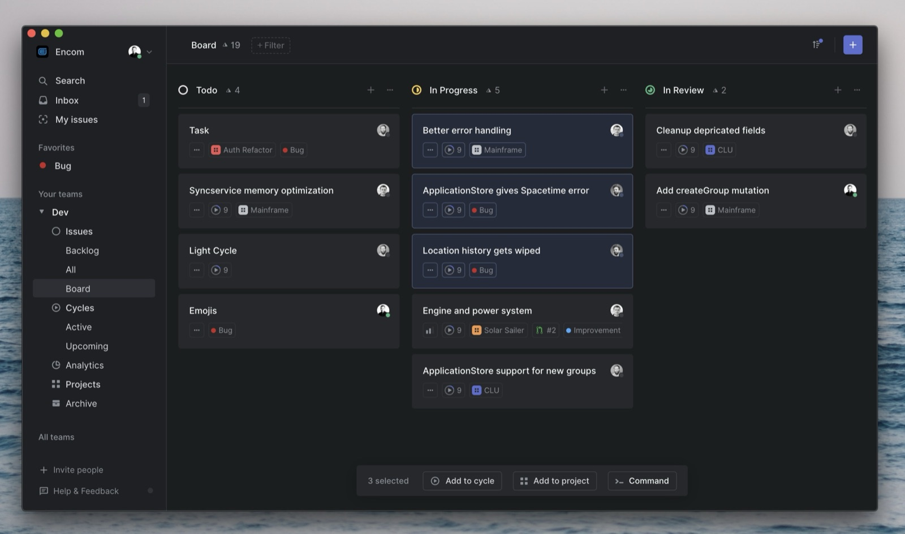
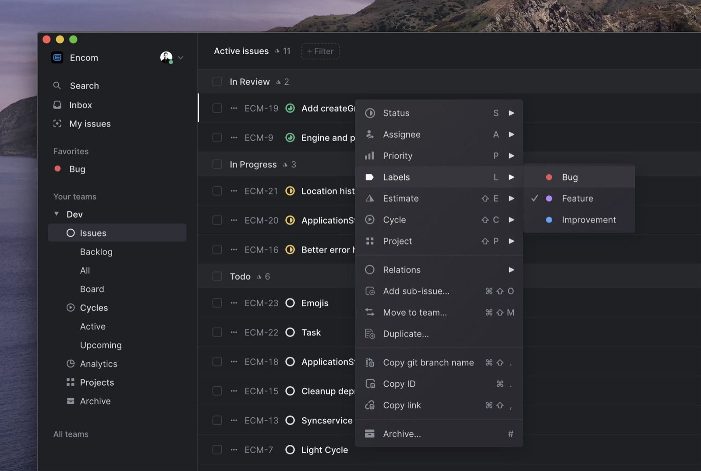
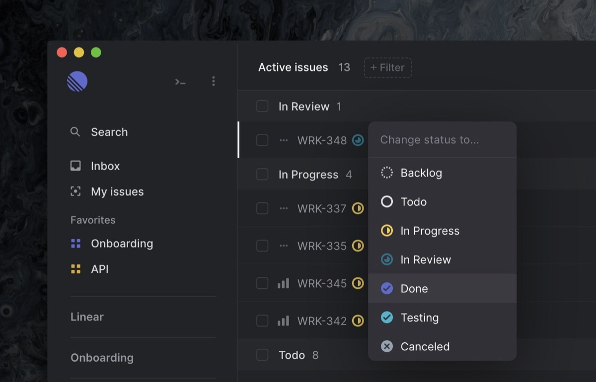
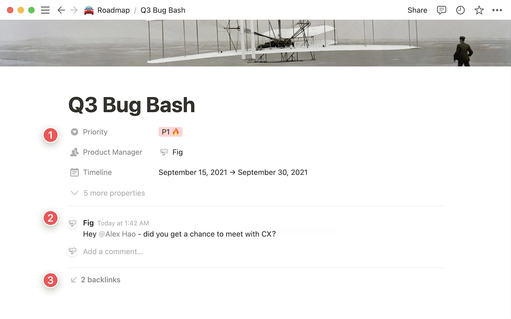
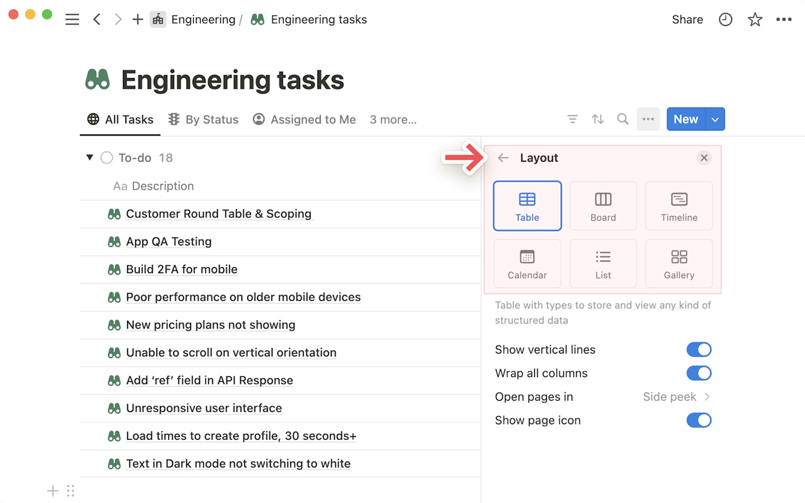
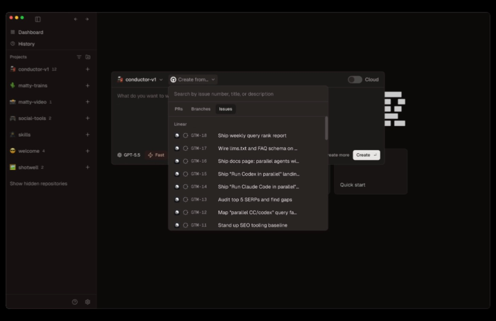

Where the actions go
Five layouts for Start, Claim, Move and Abandon, for one opened Task and for several selected. Each differs in what an action is: a button, a property, a hover control, a prompt, or a toolbar.
Today's preview: a button row under the opened brief (Edit, Start…, Claim, “…”, position, ↑↓), a floating capsule for several, the same set on right-click, and “360 words” or an owner's name at the row's right edge. References below are images published by Linear, Notion and Conductor, collected November 19, 2026. I did not use the apps.
What the references do






A · Linear: a menu per row, a bar for several
A “···” on every row opens the full action menu, and right-click opens the same menu. The opened brief has no button row. The trailing column becomes an owner avatar, a dashed circle meaning unclaimed. Several selected get Linear's bar: count, Start, Claim, Command.
Task workspace views beside the conversation: the PR, files and brief stay useful without leaving the Session…
Cost: two menus to keep in sync with the bar. Its weakness: Start sits at the same weight as Copy ID.
B · Notion: actions are properties
The opened brief starts with three properties: Owner, Wave and Position. Claiming means setting Owner. Moving means setting Wave or Position. Start is the only button, because it does something a property can't. Abandon lives under Owner ▾ as “Nobody, abandon…”. Several selected turn the header into a property editor.
- Owner
- Claim ▾
- Wave
- Product ▾
- Position
- 4 of 46 ▾
Task workspace views beside the conversation: the PR, files and brief stay useful without leaving the Session…
▶ Start…This maps onto the model directly: owner, Wave and rank are real fields. It also gives the later regrouping work a place to go, as a fourth property, Group ▾. Risk: Abandon hidden under Owner is hard to find.
C · Hover controls at the row's edge
The trailing column is the action column. At rest it shows the owner. On hover it shows Claim, ▶ and “···”, like Mail's swipe buttons. Rows act without opening, and the opened brief carries only Edit. Several selected show the same three controls in the header.
Make repeatable delivery approachable from the Task workspace…
Edit briefFastest for triage. Risk: a ▶ under the pointer while you scan makes starting feel cheap, against the brief's “selecting never starts”.
D · Conductor: Start is a composer
Starting an agent is a prompt, not a button. The opened brief ends in a composer: an optional note to the agent, the Graph and the model, then ⌘↩. Claim and the rest go in “···”. For several, the bar's Start opens one composer that lists the selected Tasks, with one shared note.
Task workspace views beside the conversation: the PR, files and brief stay useful without leaving the Session…
This is closest to what Start really does in Loopflow: launching an agent with context. The multi-select composer is also where “consider these together” could grow later. Cost: a third input surface beside the brief editor and the Wave conversation.
E · One toolbar for the selection
Rows carry no controls. A fixed toolbar under the header always shows the actions and applies them to the selection, whether one Task or many, disabled when nothing is selected. It works like Finder's or Mail's toolbar. The opened brief is only text.
Task workspace views beside the conversation: the PR, files and brief stay useful without leaving the Session…
One place, and it never moves: the simplest to learn and to build. Cost: one more always-on band of chrome, and actions sit far from the row they act on.
Side by side
These combine. B's properties with D's composer is one coherent pair, and A's right-click menu can sit under any of them.
Questions
- Which carries the actions for one opened Task? a · A, b · B, c · C, d · D, e · E
- Which carries them for several selected? a · A's bottom bar, b · B's header editor, c · D's composer, d · E's toolbar
- What does the row's right edge show at rest? a · owner avatar, b · owner name, c · word count, d · nothing